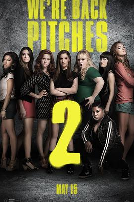

完美音调2 / Pitch Perfect 2
又名：歌喉赞2(台) / 完美巨声帮2(港)
耐飞有1和3唯独没有2（澳洲锁区），然后我找了个八百年没用的bt种子下了一整天3+G的文件，结果是个渣画质渣音质的版本，心疼然后就忍着整部电影火箭喷气的声音看完了，好不好看全靠脑补。音乐剧我的最爱！
作品信息
| 导演 | 伊丽莎白·班克斯 |
| 编剧 | 凯·加农 / 米奇·拉普金 |
| 主演 | 安娜·肯德里克 / 蕾蓓尔·威尔森 / 海莉·斯坦菲尔德 / 布里特妮·斯诺 / 斯盖拉·阿斯丁 / 亚当·德维尼 / 凯蒂·萨加尔 / 安娜·坎普 / 本·普拉特 / 亚历克西斯·克纳普 / 汉娜·梅·李 / 伊丝特尔·迪恩 / 克莉希·菲茨 / 比吉特·约尔特·索伦森 / 弗卢拉·博格 / 凯莉·杰科 / 雪莉·芮格娜 / 约翰·迈克尔·辛吉斯 / 伊丽莎白·班克斯 / 史努比狗狗 / 科甘-迈克尔·凯 / 肖恩·卡特·彼得森 |
| 类型 | 喜剧 / 音乐 |
| 制片国家/地区 | 美国 |
| 语言 | 英语 / 德语 |
| 上映日期 | 2015-05-15(美国) |
| 片长 | 115分钟 |
| IMDb | tt2848292 |
说过什么
2019-10-20 20:35:01
看过 · 时间来自广播，短评来自标记页
耐飞有1和3唯独没有2（澳洲锁区），然后我找了个八百年没用的bt种子下了一整天3+G的文件，结果是个渣画质渣音质的版本，心疼然后就忍着整部电影火箭喷气的声音看完了，好不好看全靠脑补。音乐剧我的最爱！
2019-10-15 22:44:46
广播 · 想看
最后一次看到是 2026-08-01T11:05:48+10:00 · 豆瓣原页